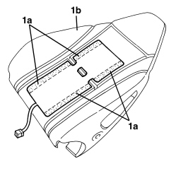

7045M26 FRONT SEAT BACKREST HEATER PAD, LEFT OR RIGHT - R.R. FOLLOWING ELECTRICAL CIRCUIT CHECK
- Path
- Procedures > 70 FITTINGS > 7045 FRONT SEATS > 7045M FRONT SEAT HEATING > 7045M26 FRONT SEAT BACKREST HEATER PAD, LEFT OR RIGHT - R.R. FOLLOWING ELECTRICAL CIRCUIT CHECK
- Kind
- repair procedure (removal / refitting; the operation number is the code)
- Applies to
- all engines; all production periods; only with equipment: Electric seats
- Interactive page
- https://sloeber94.github.io/elrnDB-aBrrSpdr/en/#/946004178
Applies to: all engines; all production periods; only with equipment: Electric seats
 Removing
Removing
 Refitting
RefittingOp. 7045A10 FRONT SEAT (ONE), LEFT OR RIGHT - R.R.
Op. 7045A25 FRONT SEAT BACKREST LUMBAR ADJUSTMENT KNOB (ONE), LEFT OR RIGHT - R.R.
Op. 7045D31 FRONT SEAT BACKREST COVER, LEFT OR RIGHT - R.R. WITH SEAT REMOVED
- Separate the backrest cover from the upholstery.
1. Remove the heater pad, detaching the adhesive surfaces (1a) from the upholstery (1b).

Applies to: all engines; all production periods; only with equipment: Electric seats
Refitting
Removing- Check that the heater pad is not damaged.
- If the heater pad detached previously is being reused, apply spray glue for plastics to the adhesive area.
- If a new heater pad is being used, remove the protective film from the adhesive section.
- Place the heater pad in position centering it in the upholstery splining.
- Stick the adhesive section of the heater pad to the upholstery.
Op. 7045D31 FRONT SEAT BACKREST COVER, LEFT OR RIGHT - R.R. WITH SEAT REMOVED
Op. 7045A25 FRONT SEAT BACKREST LUMBAR ADJUSTMENT KNOB (ONE), LEFT OR RIGHT - R.R.
Topics linked from this page (3)
- 7045A10 FRONT SEAT (ONE), LEFT OR RIGHT - R.R.
- 7045A25 FRONT SEAT BACKREST LUMBAR ADJUSTMENT KNOB (ONE), LEFT OR RIGHT - R.R.
- 7045D31 FRONT SEAT BACKREST COVER, LEFT OR RIGHT - R.R. WITH SEAT REMOVED